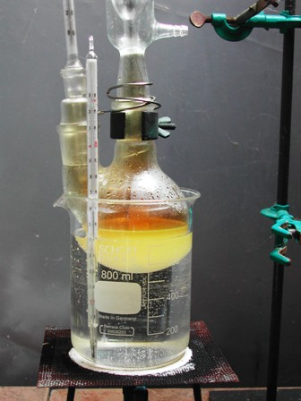
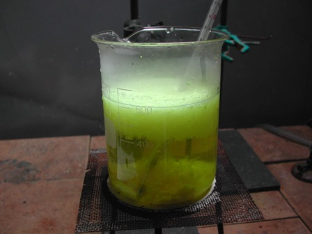
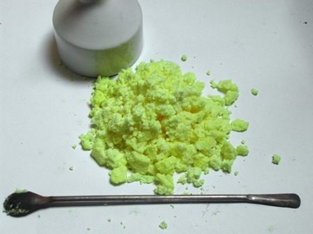
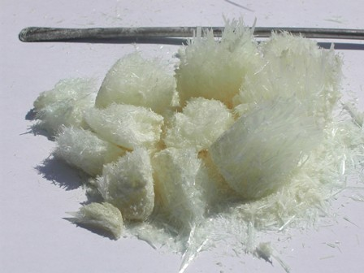

Ogni tanto mi metto a risporcare qualche provetta, per non diradare troppo la parte sperimentale di questo blog.
Perchè potete immaginare quanto COSTEREBBE tenere aggiornato l'archivio degli infiniti reagenti per continuare a far qualcosa di decentemente inedito in chimica organica?
Se qualcuno ha la fortuna di usare i reagenti "istituzionalmente" (a scuola o al lavoro), questo purtroppo non è il mio caso...
Ho preparato stavolta il m-dinitrobenzene, che servirà come intermedio per una sintesi futura che voglio provare, ovvero la riduzione selettiva di un nitrogruppo a gruppo amminico.
La nitrazione di un composto aromatico contenente gruppi attivanti (-OH, -NH2, ecc.) si può fare in condizioni abbastanza blande; in presenza invece di gruppi disattivanti (come per es. il primo -NO2 del nitrobenzene) le condizioni di lavoro devono essere drastiche e condotte con acido nitrico a fortissima concentrazione, a caldo e in presenza di molto acido solforico.
In genere le procedure di sintesi (per la stessa molecola da ottenere) sono numerose almeno come gli autori delle medesime, e le nitrazioni lo sono in modo in particolare: anch'io ho fatto un po' di testa mia, prendendo spunto dalle numerose fonti a disposizione, tutte simili e tutte diverse.
Il risultato in definitiva non cambia molto.
Materiale occorrente:
- nitrobenzene C6H5-NO2
- acido nitrico fumante d. 1,50
- acido solforico
- etaolo (metanolo)
- vetreria opportuna
-Preparare innanzitutto la miscela solfonitrica, mescolando cautamente sotto energica agitazione, senza lasciar scaldare troppo, 30 ml di HNO3 fumante d.1,50 con 50 ml di H2SO4 concentrato; lasciar poi raffreddare.
Nel frattempo porre 30 g (25 ml) di nitrobenzene in un pallone a doppio collo da 250 ml, applicando un termometro a bulbo lungo, un refrigerante a ricadere ed un agitatore magnetico.
Con l'agitatorein funzione, introdurre dall'alto la miscela nitrante a piccole porzioni (un paio di ml per volta) controllando che la temperatura si mantenga sotto i 100°, cosa che avviene senza difficoltà.


Terminata l'aggiunta porre il pallone in un bagno d'acqua bollente e riscaldare a ricadere per almeno un'ora, mescolando frequentemente.
Lasciar raffreddare e poi gettare cautamente il liquido in 400 ml di acqua ghiacciata; il m-dinitrobenzene grezzo si separa istantaneamente come precipitato grumoso giallo.


Filtrare su buchner separando al meglio la parte liquida acida e aggiungere al residuo ancora 300 ml di acqua, riscaldare fino a fusione del prodotto (sotto i 90°) e neutralizzare con NaHCO3 solido fino a cessare dell'effervescenza e ancora un poco in eccesso.
Porre su agitatore e lasciar raffreddare sempre mescolando. Si ottiene in questo modo un prodotto ancora grezzo ma sotto forma di piccole palline regolari.
Ho ricristallizzato ora in più fasi con circa 150 ml di una miscela 1:1 di etanolo/metanolo.
Saturare all'ebollizione con il dinitrobenzene grezzo e lasciar raffreddare lentamente; separare su buchner i cristalli e ripetere l'operazione con le stesse acque madri (alcol) finchè tutto il prodotto è stato sciolto.
Alla fine, poichè la differenza di solubilità caldo/freddo negli alcoli non è elevatissima, si può recuperare l'ultimo prodotto cristallizzando con una mix alcol/acqua con la solita procedura.
Ecco il 1,3-dinitrobenzene ottenuto, che si presenta in bei cristalli aghiformi incolori (bianchi nella massa) e quasi inodori; la tonalità giallina è appena appena accennata.
I gruppi -NO2 sono fortemente meta-orientanti e quindi la quantità di isomeri -o e -p è sicuramente molto bassa.
Lo conferma il punto di fusione di circa 87°, vicino ai canonici 90; la resa è stata di 30 g, circa il 73%.

Fra un po' di tempo proverò quella riduzione selettiva alla quale accennavo all'inizio.
2 commenti